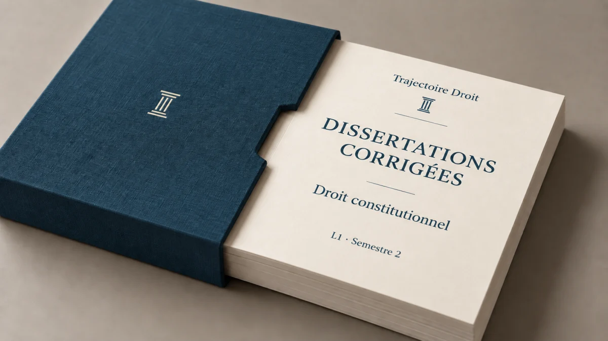

Pack annuel
Commentaires d'arrêt L1
Le pack réunit le droit des personnes et le droit de la famille, avec vingt commentaires entièrement rédigés.
29,98 €22 €-27 %
Les trois exercices sont rédigés en entier, comme une vraie copie. Dans le commentaire d'arrêt, chaque partie commence par un chapô, c'est-à-dire le court paragraphe qui annonce ses sous-parties, puis le développement suit le plan jusqu'au bout. Dans le cas pratique, tu vois la règle de droit écrite en premier, puis son application aux faits, condition par condition, jusqu'à la solution. Enfin, la dissertation suit une introduction en 7 étapes et un plan en deux parties. Tu vois ainsi ce qu'un correcteur attend, sujet par sujet.

Le PDF t'est livré dès le paiement. S'il ne te convient pas, tu m'écris dans les 7 jours qui suivent ton achat et je te rembourse en entier. Voir la politique complète →
Tu hésites entre un corrigé, une fiche ou une majeure ? Compare les formats →
Chaque recueil reste séparé par matière pour que tu retrouves directement le sujet que tu travailles. Tu paies environ 25 % de moins que matière par matière.
Tu retrouves chaque décision avec son introduction, son plan et son développement entièrement rédigés.
Le pack réunit le droit des personnes et le droit de la famille, avec vingt commentaires entièrement rédigés.
Le pack réunit tes matières de L2, dont les deux semestres de droit administratif. Tu y trouves aussi le droit pénal et tout le droit civil de deuxième année, des contrats aux biens.
Le pack réunit les contrats spéciaux et le droit des sociétés, ainsi que le droit du travail.
Chaque corrigé commence par qualifier les faits, c'est-à-dire leur donner leur nom juridique. Il pose ensuite la règle de droit, puis l'applique aux faits avant de conclure.
Le pack couvre l'introduction au droit et le droit pénal général, ainsi que le droit des personnes et de la famille. Il contient quarante cas pratiques et douze sujets construits comme un partiel.
Le pack couvre les deux semestres de droit administratif, puis le droit pénal et tout le droit civil de deuxième année, des contrats aux biens. Il contient soixante cas pratiques et dix-huit sujets construits comme un partiel.
Le pack couvre le droit commercial sur les deux semestres, puis les autres matières de L3, des contrats spéciaux à la procédure pénale. Il contient soixante-cinq cas pratiques et vingt et un sujets construits comme un partiel.
Chaque recueil couvre une matière et s'achète à l'unité. Tous les grands arrêts y sont commentés intégralement au format copie modèle.
10 commentaires d'arrêt corrigés en entier, rédigés comme une copie modèle. Chaque partie s'ouvre sur un chapô, le court paragraphe qui annonce ses deux sous-parties, puis le développement suit le plan.
Le recueil corrige 10 commentaires d'arrêt de la première à la dernière ligne, au format d'une copie modèle. Tu y suis le plan jusqu'au bout du développement, et chaque partie commence par un chapô, c'est-à-dire le paragraphe qui annonce ses sous-parties.
10 commentaires d'arrêt rédigés en intégralité, comme la copie que tu rendrais en TD. Chaque partie commence par son chapô, le paragraphe qui annonce ce qu'elle va démontrer, et le développement suit ensuite le plan.
13 commentaires d'arrêt corrigés en entier, rédigés comme une copie modèle. Chaque partie s'ouvre sur un chapô, le court paragraphe qui annonce ses deux sous-parties, puis le développement suit le plan.
Le recueil corrige 10 commentaires d'arrêt de la première à la dernière ligne, au format d'une copie modèle. Tu y suis le plan jusqu'au bout du développement, et chaque partie commence par un chapô, c'est-à-dire le paragraphe qui annonce ses sous-parties.
11 commentaires d'arrêt rédigés en intégralité, comme la copie que tu rendrais en TD. Chaque partie commence par son chapô, le paragraphe qui annonce ce qu'elle va démontrer, et le développement suit ensuite le plan.
17 commentaires d'arrêt corrigés en entier, rédigés comme une copie modèle. Chaque partie s'ouvre sur un chapô, le court paragraphe qui annonce ses deux sous-parties, puis le développement suit le plan.
Le recueil corrige 10 commentaires d'arrêt de la première à la dernière ligne, au format d'une copie modèle. Tu y suis le plan jusqu'au bout du développement, et chaque partie commence par un chapô, c'est-à-dire le paragraphe qui annonce ses sous-parties.
10 commentaires d'arrêt rédigés en intégralité, comme la copie que tu rendrais en TD. Chaque partie commence par son chapô, le paragraphe qui annonce ce qu'elle va démontrer, et le développement suit ensuite le plan.
17 commentaires d'arrêt corrigés en entier, rédigés comme une copie modèle. Chaque partie s'ouvre sur un chapô, le court paragraphe qui annonce ses deux sous-parties, puis le développement suit le plan.
Le recueil corrige 10 commentaires d'arrêt de la première à la dernière ligne, au format d'une copie modèle. Tu y suis le plan jusqu'au bout du développement, et chaque partie commence par un chapô, c'est-à-dire le paragraphe qui annonce ses sous-parties.
Chaque corrigé suit le raisonnement attendu en cas pratique. Après le rappel des faits, il pose la règle de droit, qu'on appelle la majeure, puis l'applique aux faits dans la mineure, avant de conclure. Tu t'entraînes ainsi sur des cas classiques et sur des sujets construits comme un partiel.
10 cas pratiques corrigés en entier, puis 3 sujets de partiel qui mélangent plusieurs thèmes, comme le jour de l'examen.
Tu t'entraînes sur 10 cas pratiques corrigés du début à la fin. Le recueil se termine par 3 sujets au format du partiel, qui croisent plusieurs thèmes du programme.
Le recueil contient 10 cas pratiques entièrement corrigés, et 3 sujets construits comme un partiel, où plusieurs thèmes se mélangent dans le même énoncé.
10 cas pratiques corrigés en entier, puis 3 sujets de partiel qui mélangent plusieurs thèmes, comme le jour de l'examen.
Tu t'entraînes sur 10 cas pratiques corrigés du début à la fin. Le recueil se termine par 3 sujets au format du partiel, qui croisent plusieurs thèmes du programme.
Le recueil contient 10 cas pratiques entièrement corrigés, et 3 sujets construits comme un partiel, où plusieurs thèmes se mélangent dans le même énoncé.
10 cas pratiques corrigés en entier, puis 3 sujets de partiel qui mélangent plusieurs thèmes, comme le jour de l'examen.
Tu t'entraînes sur 10 cas pratiques corrigés du début à la fin. Le recueil se termine par 3 sujets au format du partiel, qui croisent plusieurs thèmes du programme.
Le recueil contient 10 cas pratiques entièrement corrigés, et 3 sujets construits comme un partiel, où plusieurs thèmes se mélangent dans le même énoncé.
10 cas pratiques corrigés en entier, puis 3 sujets de partiel qui mélangent plusieurs thèmes, comme le jour de l'examen.
Tu t'entraînes sur 10 cas pratiques corrigés du début à la fin. Le recueil se termine par 3 sujets au format du partiel, qui croisent plusieurs thèmes du programme.
Le recueil contient 10 cas pratiques entièrement corrigés, et 3 sujets construits comme un partiel, où plusieurs thèmes se mélangent dans le même énoncé.
15 cas pratiques corrigés en entier, puis 6 sujets de partiel qui mélangent plusieurs thèmes, comme le jour de l'examen.
Tu t'entraînes sur 12 cas pratiques corrigés du début à la fin. Le recueil se termine par 4 sujets au format du partiel, qui croisent plusieurs thèmes du programme.
Le recueil contient 12 cas pratiques entièrement corrigés, et 4 sujets construits comme un partiel, où plusieurs thèmes se mélangent dans le même énoncé.
10 cas pratiques corrigés en entier, puis 3 sujets de partiel qui mélangent plusieurs thèmes, comme le jour de l'examen.

Tu t'entraînes sur 10 cas pratiques corrigés du début à la fin. Le recueil se termine par 3 sujets au format du partiel, qui croisent plusieurs thèmes du programme.
Chaque sujet commence par une page où j'analyse le sens de chaque mot. La copie modèle suit, rédigée au propre avec une introduction en 7 étapes et un plan en deux parties.
10 sujets de dissertation corrigés. Pour chacun, j'analyse d'abord le sens de chaque mot du sujet, puis je rédige la copie modèle au propre.
10 dissertations corrigées. Chacune commence par l'analyse du sujet mot par mot, et se termine par la copie modèle rédigée au propre.
Sur 10 sujets de dissertation, tu vois d'abord le travail au brouillon sur le sens de chaque mot, puis la copie modèle rédigée au propre.

10 sujets de dissertation corrigés. Pour chacun, j'analyse d'abord le sens de chaque mot du sujet, puis je rédige la copie modèle au propre.
10 dissertations corrigées. Chacune commence par l'analyse du sujet mot par mot, et se termine par la copie modèle rédigée au propre.
Sur 10 sujets de dissertation, tu vois d'abord le travail au brouillon sur le sens de chaque mot, puis la copie modèle rédigée au propre.
34 corrigés disponibles au total, de la L1 à la L3.
Tu cherches un sujet de droit administratif ? En attendant le pack complet, plusieurs copies modèles sont gratuites et rédigées en entier. La première est la dissertation corrigée sur le contrôle du juge administratif, et la deuxième porte sur le Conseil d'État et la loi. La troisième traite du sujet « La faute lourde, une franchise de responsabilité ». Retrouve enfin deux sujets de plus, sur le juge administratif et la police administrative, avec une banque de sujets classiques par semestre.
Tu peux m'écrire directement, je lis et je réponds moi-même à chaque message.
En 3 minutes, tu vois sur quels exercices tu perds des points en droit, et tu repars avec ton plan pour les récupérer. C'est gratuit et sans inscription.
Faire le quiz gratuit →3 minutes · sans inscription